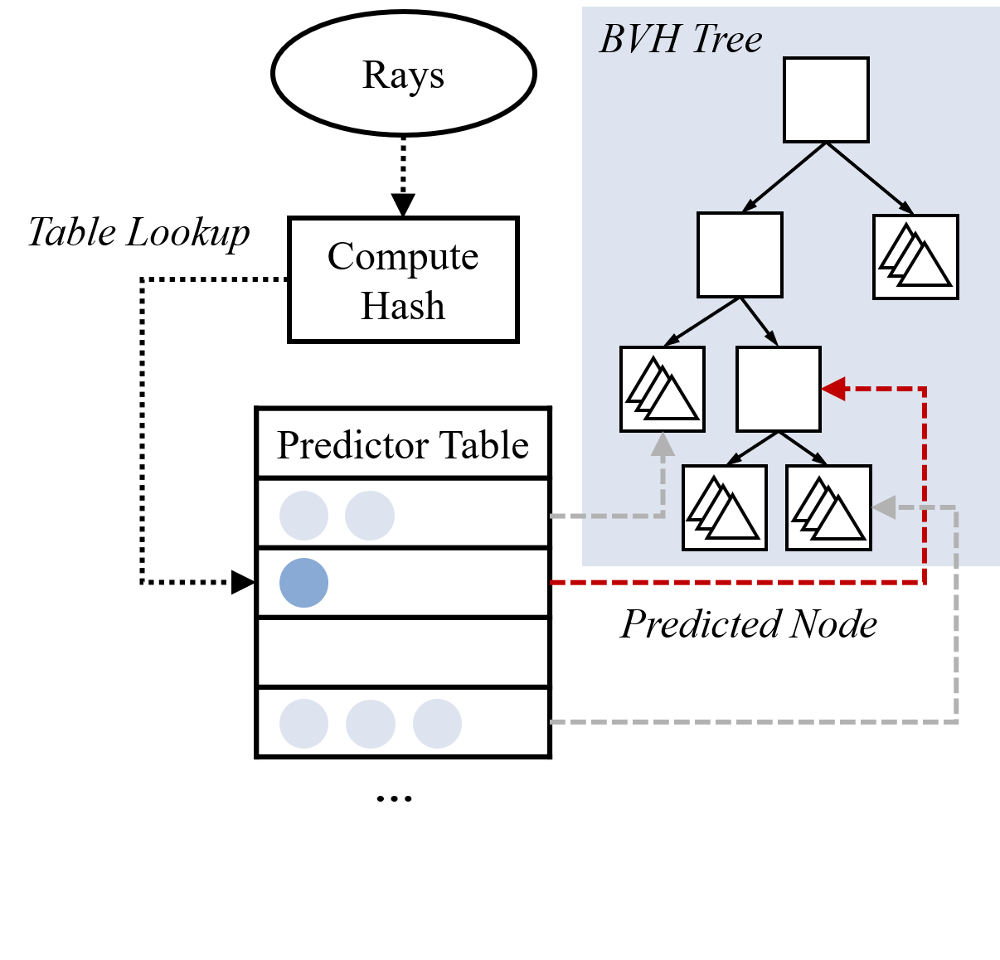
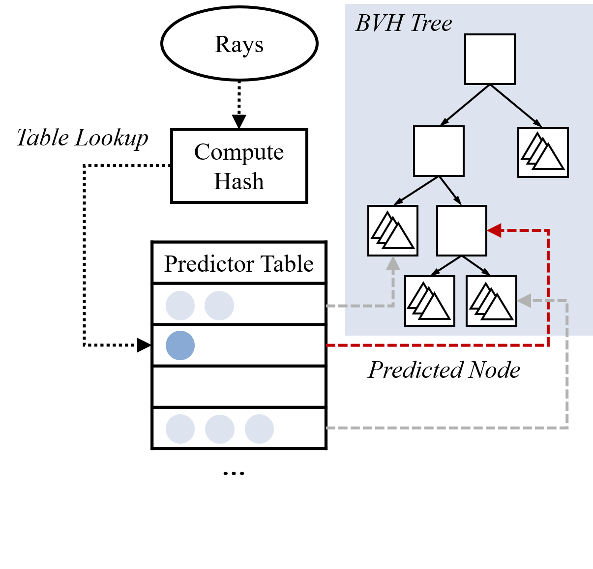

Intersection Prediction for Accelerated GPU Ray Tracing
MICRO 2021
 

Abstract
Ray tracing has been used for years in motion picture to generate photorealistic images while
faster raster-based shading techniques have been preferred for video games to meet real-time requirements.
However, recent Graphics Processing Units (GPUs) incorporate hardware accelerator units
designed for ray tracing.
These accelerator units target the process of traversing hierarchical tree data structures used to test for
ray-object intersections.
Distinct rays following similar paths through these structures execute many redundant ray-box intersection
tests.
We propose a ray intersection predictor that speculatively elides redundant operations during this process
and proceeds
directly to test primitives that the ray is likely to intersect.
A key aspect of our predictor strategy involves identifying hash functions that preserve enough spatial
information to identify redundant traversals.
We explore how to integrate our ray prediction strategy into existing GPU pipelines along with improving the
predictor effectiveness by predicting nodes higher in the tree as well as regrouping and scheduling
traversal operations in a low cost, judicious manner.
On a mobile class GPU with a ray tracing accelerator unit, we find the addition of a 5.5KB predictor per
streaming multiprocessor improves performance for ambient occlusion workloads by a geometric mean of 26%.
Resources
View our paper on ACM https://dl.acm.org/doi/10.1145/3466752.3480097
Download our paper here
Simulator code is available at https://github.com/ubc-aamodt-group/ray-intersection-predictor
Full artifact on Zenodo https://doi.org/10.5281/zenodo.5147579